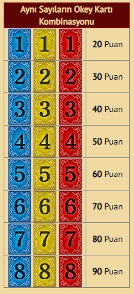
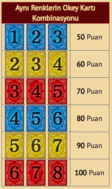
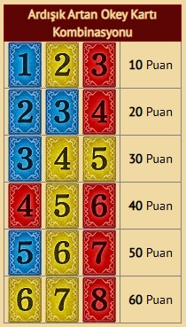

Metin2 Okey Kart Etkinliği Yardımcısı
En sevilen Metin2 etkinliklerinden birisi olan Okey Kart Etkinliği oynaması zevkli ve aynı zamanda sıkıcı bir oyundur. 1'den 8'e kadar kartlar Kırmızı, Mavi ve Sarı olmak üzere destende rastgele dizilmiştir. 5 tane açarak bunlardan 3 tanesini seçersin ve puan elde edersin.
Seçtiğin ve attığın kartları takip etmek için yukarıdaki aracı kullan. Her bir kartın üstüne tıklayarak onun rengini değiştir ve kullanılan kartı temsil etmesini sağla.
Okey Kartı Etkinliği Puan Tablosu



Metin2 PVP Serverler